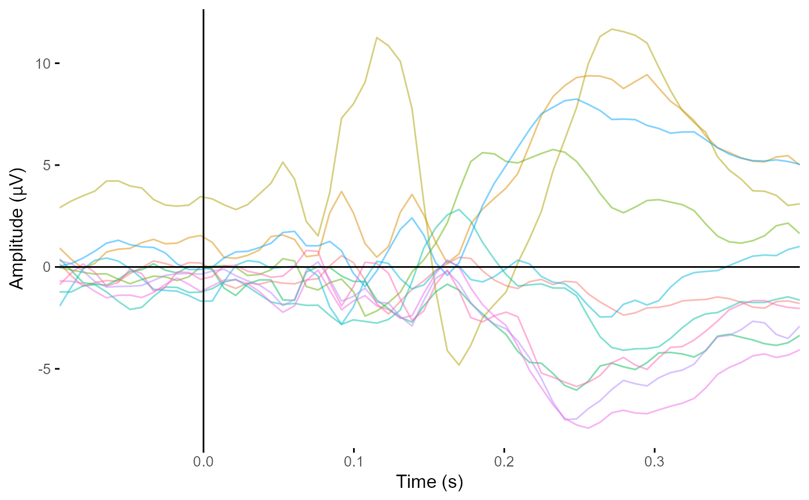

Typically event-related potentials/fields, but could also be timecourses from frequency analyses for single frequencies. Output is a ggplot2 object. CIs not possible.
plot_butterfly(data, ...) # S3 method for default plot_butterfly( data, time_lim = NULL, baseline = NULL, colourmap = NULL, legend = TRUE, continuous = FALSE, browse_mode = FALSE, allow_facets = FALSE, ... ) # S3 method for eeg_evoked plot_butterfly( data, time_lim = NULL, baseline = NULL, colourmap = NULL, legend = TRUE, continuous = FALSE, browse_mode = FALSE, allow_facets = FALSE, ... ) # S3 method for eeg_data plot_butterfly( data, time_lim = NULL, baseline = NULL, legend = TRUE, allow_facets = FALSE, browse_mode = FALSE, ... ) # S3 method for eeg_epochs plot_butterfly( data, time_lim = NULL, baseline = NULL, legend = TRUE, allow_facets = FALSE, browse_mode = FALSE, ... ) # S3 method for eeg_stats plot_butterfly( data, time_lim = NULL, baseline = NULL, legend = TRUE, allow_facets = FALSE, browse_mode = FALSE, quantity = "statistic", ... ) # S3 method for eeg_lm plot_butterfly( data, time_lim = NULL, baseline = NULL, legend = TRUE, allow_facets = FALSE, browse_mode = FALSE, quantity = "coefficients", ... )
| data | EEG dataset. Should have multiple timepoints. |
|---|---|
| ... | Other parameters passed to plot_butterfly |
| time_lim | Character vector. Numbers in whatever time unit is used specifying beginning and end of time-range to plot. e.g. c(-.1,.3) |
| baseline | Character vector. Times to use as a baseline. Takes the mean over the specified period and subtracts. e.g. c(-.1, 0) |
| colourmap | Attempt to plot using a different colourmap (from RColorBrewer). (Not yet implemented) |
| legend | Include plot legend. Defaults to TRUE. |
| continuous | Is the data continuous or not (I.e. epoched) |
| browse_mode | Custom theme for use with browse_data. |
| allow_facets | Allow use of ggplot2 facetting. See note below. Defaults to FALSE. |
| quantity | Which aspect of the linear model you want to be plotted. only
applies to |
A ggplot object
ggplot2 object showing ERPs for all electrodes overlaid on a single plot.
default: Default plot_butterfly method for data.frames,
eeg_data
eeg_evoked: Plot butterfly for eeg_evoked objects
eeg_data: Create butterfly plot for eeg_data objects
eeg_epochs: Create butterfly plot for eeg_epochs objects
eeg_stats: Create butterfly plot for eeg_stats objects
eeg_lm: Create butterfly plot for eeg_lm objects
In order for ggplot2 facetting to work, the data has to be plotted using
stat_summary() rather than geom_line(), so that the plots can still be
made when not all categorical variables are reflected in the facets. e.g.
if there are two variables with two levels each, but you want to average
over one of those variables, stat_summary() is required. However,
stat_summary() is extremely slow.
Matt Craddock, matt@mattcraddock.com
plot_butterfly(demo_epochs)#>#>